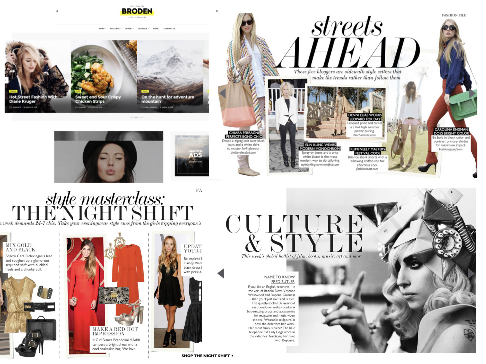

The Inspiration
Looking at editorial magazine layouts and how they used a layered and cut paper effect shaped the concept of The Trumpet. The website needed to have a luxurious feel but also needed personality and be relatable. The mixture of clean grid system and layered with images and playing with various types stimulated the site's goal to be "classy and experimental".
